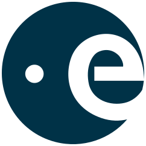
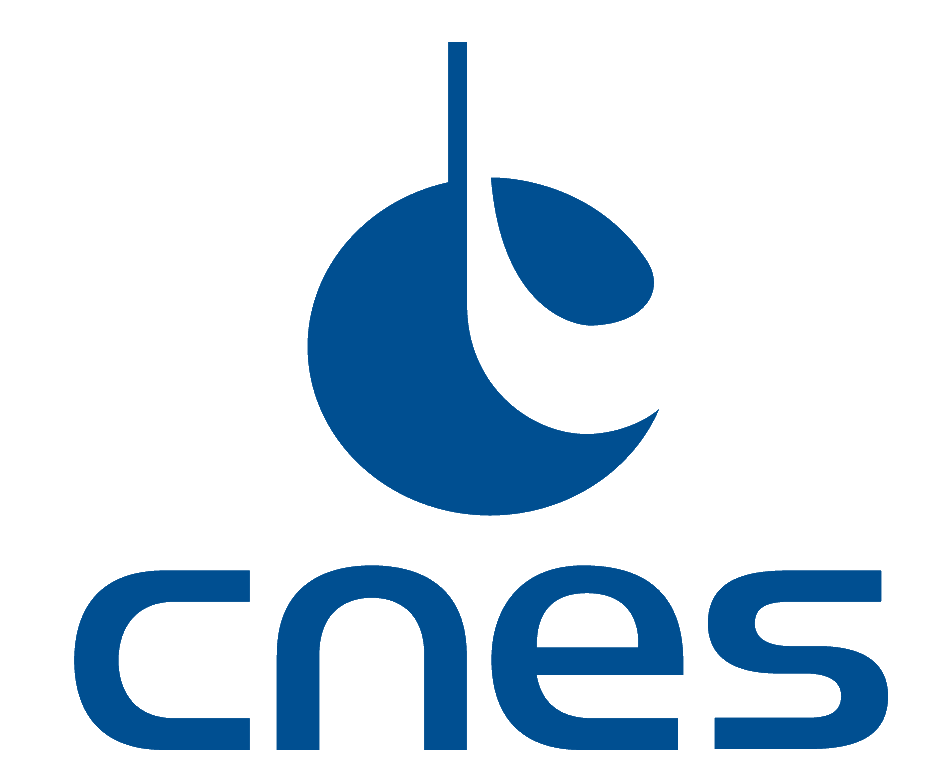
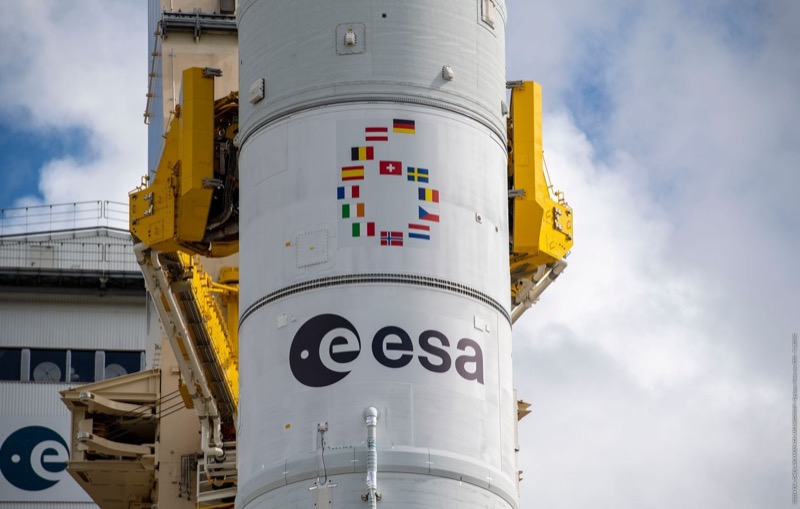
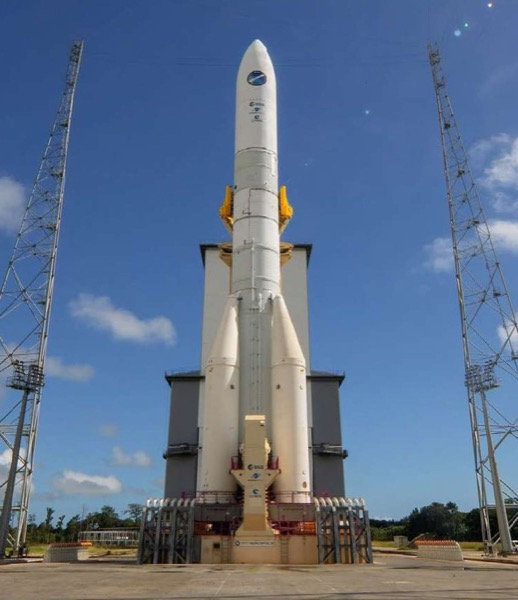
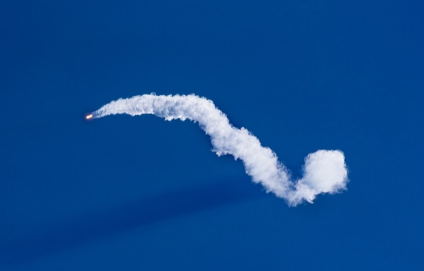
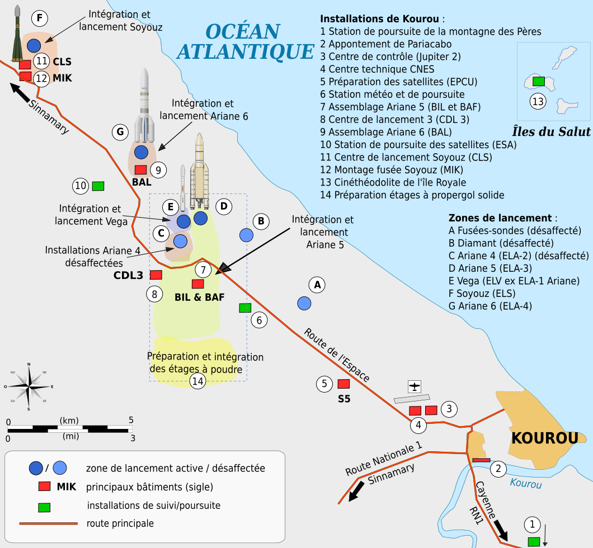

Les acteurs du secteur spatial européen — de la fabrication à la commercialisation des lanceurs.
Key players in the European space launch ecosystem — from manufacturing to commercialisation.
ArianespaceArianeGroupAirbusSafran

ESA

CNES
Mission
Personne n'échappe au récit de la conquête de l'espace (Laïka, Gagarine, Armstrong et Apollo 11), au spectacle des lancements de fusées (ou de leurs échecs spectaculaires), à la mise en scène des satellites. Dans les années 2010 surtout, personne n'échappe à la montée en puissance de SpaceX qui multiplie les tests, développe lanceurs moyens, lanceurs lourds, et surtout ces dernières années lanceurs réutilisables.
Personne n'échappe également dans les années 2020 au lancement de constellations de satellites par Amazon, ou par SpaceX, colonisant les orbites rapidement.
L'espace prend de la place dans les médias avec la croissance effrénée de géants américains, dont les ambitions ne semblent reculer devant rien.
C'est dans ce contexte, en 2025, que j'ai l'opportunité d'intervenir sur la mission Arianespace en tant qu'auditeur financier, étant partiellement conscient des enjeux opérationnels, stratégiques ou politiques. C'est en faisant mes recherches sur le client et son environnement que je découvre l'histoire et les enjeux du secteur.
No one escapes the narrative of space conquest — Laika, Gagarin, Apollo 11 — or the spectacle of rocket launches. In the 2010s, SpaceX's rise became impossible to ignore: successive tests, medium and heavy launchers, and above all reusable vehicles. By the 2020s, Amazon and SpaceX were racing to colonise orbits with satellite mega-constellations. Space seized the media spotlight, driven by American giants whose ambitions know no bounds.
It was in this context that, in 2025, I had the opportunity to audit Arianespace as a financial auditor — entering the engagement aware of the operational, strategic and political stakes, but discovering the full scope of the sector through my own research.
Un projet résolument européen
A resolutely European project
Ariane est un projet résolument européen. Depuis les débuts de la création de fusées avec le projet Europa, jusqu'à Arianespace, le projet a toujours été le résultat d'une collaboration de pays européens, de l'European Space Agency (ESA), et du Centre National d'Études Spatiales (CNES).
L'idée est, depuis son initiation, de permettre à l'Europe un accès indépendant à l'espace, c'est-à-dire de mettre en orbite ses propres satellites, civils (télécommunications, observations météo) ou militaires.
Ariane is a resolutely European project. From the early Europa rocket programme to Arianespace, it has always been the product of collaboration between European nations, the European Space Agency (ESA), and France's national space agency CNES. The founding idea: to guarantee Europe an independent path to space — the ability to place its own civilian (telecommunications, meteorology) and military satellites in orbit.

Retrait du portique mobile, ZL4 — Kourou, juin 2024
Mobile gantry removal, ZL4 — Kourou, June 2024
Vers plus de flexibilité : Soyouz, Vega et la naissance d'ArianeGroup
Gaining flexibility: Soyuz, Vega, and the birth of ArianeGroup
Le système de lancement Ariane, comme tout bon projet européen, manquait de flexibilité. Le lanceur Ariane 5, impressionnant technologiquement et véritable fierté européenne, est lourd et ne convient pas à tous les satellites, qui eux sont de plus en plus légers.
Arianespace obtient d'abord, au milieu des années 2000, l'exploitation du mythique lanceur russe Soyouz, plus léger, fiable et relativement peu cher, puis en 2012 l'exploitation du lanceur italien Vega, réalisé par le constructeur Avio, également plus léger que le système Ariane.
Airbus et Safran, ayant participé ensemble aux constructions successives d'Ariane, longuement collaboré et développé une grande synergie, créent Airbus Safran Launchers (ASL) en 2014. Objectif : racheter le groupe Arianespace et développer la prochaine génération de lanceurs : Ariane 6. À l'issue du rachat en 2017, ASL devient ArianeGroup, en charge de la production, et détient Arianespace, en charge de la commercialisation.
The Ariane launch system lacked flexibility. Ariane 5, technically impressive and a source of European pride, was too heavy for the growing number of lighter satellites. Arianespace secured operation of the legendary Russian Soyuz in the mid-2000s and of the Italian Vega launcher (built by Avio) in 2012, both lighter alternatives. Airbus and Safran — long-time collaborators across successive Ariane generations — created Airbus Safran Launchers (ASL) in 2014 to acquire Arianespace and develop Ariane 6. After the 2017 acquisition, ASL became ArianeGroup, handling production and owning Arianespace, which handles commercialisation.
AirbusSafranArianeGroup
Le contexte en 2025 : Ariane 6 face à une concurrence mondiale
The 2025 landscape: Ariane 6 facing global competition
Le contexte dans lequel j'interviens se trouve dégradé : depuis la guerre en Ukraine, le lanceur Soyouz n'est plus utilisable, et Avio, le constructeur italien, a souhaité reprendre le contrôle de son lanceur Vega.
Heureusement, Ariane 6 est prête. L'année où j'audite les comptes, les lancements se sont enchaînés avec succès, mêlant lancements institutionnels et commerciaux, civils et militaires. SpaceX en revanche est un concurrent menaçant : la société possède des modèles de lanceurs variés, est en mesure de tous les exploiter, et réalise plus de la moitié des lancements de l'année — sur 324 lancements en 2025, SpaceX en a réalisé 165, soit 3 par semaine — et dispose d'une capacité de réutilisation largement supérieure, dont le premier étage du Falcon 9 a été réutilisé plus de 30 fois.
Ce n'est cependant pas le seul acteur : des puissances étatiques telles que la Chine, l'Inde ou le Japon se trouvent également en concurrence.
La place du groupe Ariane ici est donc incomparable : en 2025, la société se voit contrainte de n'utiliser que son lanceur Ariane 6, a réalisé 7 lancements (1 tous les 2 mois) et n'a réutilisé aucun étage de ses fusées.
The context I audited was deteriorating: following the war in Ukraine, the Soyuz is no longer available; Avio has reclaimed control of Vega. Fortunately, Ariane 6 is operational, with launches coming in steady succession in 2025 — combining institutional and commercial, civilian and military missions. Yet SpaceX remains a formidable competitor, operating a diverse fleet and performing 165 of 324 global launches in 2025 (roughly 3 per week), with a Falcon 9 first stage reused more than 30 times. State actors — China, India, Japan — add further competition.
Arianespace's position in this landscape is stark: in 2025 it operated only Ariane 6, completed 7 launches (one every two months), and reused no stages.

Ariane 6 — rampe de lancement, Kourou
Ariane 6 — launch pad, Kourou

SpaceX Falcon 9
Nuances et perspectives
Nuances and outlook
Il faut cependant relativiser cette mise en perspective :
This picture deserves nuance:
Si Vega n'est désormais plus opéré par Arianespace, il reste un lanceur européen et garantit, au même titre qu'Ariane, l'accès à l'espace et la souveraineté de l'Europe.
Ariane 6 a été conçu pour être plus flexible et existe en version A62 ou A64, permettant d'adapter la puissance de la fusée à l'objet mis en orbite.
Sur 165 lancements de SpaceX, 120 étaient liés aux mises en orbite de ses propres constellations. L'entreprise tire profit de synergies entre ses différents pôles d'activités, ce que ne peut pas faire Ariane, dont la mission est uniquement la fabrication et la commercialisation des lanceurs.
La filière des lanceurs réutilisables est un projet déjà actif au sein du groupe avec Maiaspace.
Vega, though no longer operated by Arianespace, remains a European launcher and continues to guarantee European sovereign access to space.
Ariane 6 was designed to be more flexible and exists in two variants — A62 and A64 — matching the rocket's power to the payload.
Of SpaceX's 165 launches, 120 served its own constellation — a vertical integration advantage Arianespace cannot replicate, as its mission is solely to manufacture and commercialise launchers.
Reusable launcher development is already underway within the group via Maiaspace.
Par ailleurs, la filière est soutenue par les États, qui y voient une garantie de leur indépendance.
States also actively support the sector, seeing it as a guarantee of strategic independence.
Financièrement, ces opérations se reflètent dans les comptes d'Arianespace de 2025 :
These dynamics are clearly reflected in the 2025 financial statements:
Le conflit russo-ukrainien. Dans la note 1 « Immobilisations » (p.24), les droits d'utilisation de Soyouz ont été totalement sortis du bilan pour 167 M€. Ils représentaient le droit d'Arianespace à commercialiser le lanceur. Dans la note 11 « Provisions pour risques et charges », les acomptes versés à la Russie dans le cadre de l'exploitation de Soyouz sont gelés pour 388 M€ et font l'objet d'une provision intégrale — la société ne s'attend pas à récupérer ces acomptes versés, ni à restituer les acomptes reçus.
The Ukraine conflict. In note 1 on fixed assets (p.24), the Soyuz operating rights were fully written off at €167m — these represented the right to commercialise the launcher. Note 11 on provisions shows that €388m in advances paid to Russia have been frozen and fully provisioned: the company expects neither to recover these advances nor to return those received.
Le soutien étatique. Élément central du fonctionnement de la société, ce soutien a été renouvelé lors du sommet de Séville, actant l'engagement du secteur aérospatial pour plusieurs centaines de millions d'euros. Il permet à Airbus et Safran de maintenir les opérations et de recapitaliser la société — c'est-à-dire d'absorber les pertes et de témoigner de leur confiance dans l'exploitation future. (Synthétisé en note 1 « Activité de la Société au cours de l'exercice », faits marquants, p.16.)
State support. Renewed at the Seville summit for several hundred million euros, state backing allows Airbus and Safran to sustain operations and recapitalise the company — absorbing losses and signalling confidence in future operations. (Summarised in note 1, p.16.)
Par ailleurs, la note 11 « Provisions pour risques et charges » révèle une provision pour risques techniques et commerciaux de 20 M€, reflétant les pertes attendues sur certains contrats signés. S'agissant d'une estimation comptable, cet élément fait l'objet d'une attention particulière en audit (ISA 540R). La subtilité est d'y voir non pas un échec commercial, mais un choix assumé : Arianespace accepte de réaliser certains lancements déficitaires au nom du maintien de la souveraineté européenne dans l'accès à l'espace.
Note 11 also reveals a €20m provision for technical and commercial risks, reflecting expected losses on certain contracts — an accounting estimate warranting particular audit attention (ISA 540R). The key insight: this does not mean the company expects only loss-making launches. Rather, it accepts certain loss-making launches in the name of maintaining European sovereign access to space.

Centre Spatial Guyanais — Kourou
Guiana Space Centre — Kourou
Conclusion
Il faut donc rappeler que les lanceurs européens remplissent pleinement leur rôle, ce pour quoi ils ont été conçus, et les services qu'ils doivent rendre. L'Europe reste compétitive et en capacité de produire des systèmes de qualité, flexibles, et de rejoindre les acteurs dominants sur leurs segments.
La capacité des États à garantir l'exploitation renforce la confiance et fait perdurer une filière historique de compétence technique et industrielle avancée, utile et nécessaire.
Les synergies restent encore à développer avec d'autres acteurs européens : un des exemples les plus évidents reste la domination des géants américains et leurs interconnexions, créant un écosystème presque fermé qui leur est extrêmement avantageux.
European launchers are fulfilling the role for which they were designed. Europe remains competitive and capable of producing high-quality, flexible systems that can hold their ground against dominant players on each market segment.
States' capacity to guarantee operations reinforces confidence and sustains a historic sector of advanced technical and industrial expertise — one that is both useful and necessary.
What remains to be built are the synergies that American giants have developed across their ecosystems — an almost closed loop that gives them a decisive structural advantage and that Europe has yet to replicate.
Anecdotes
Une des obligations du commissaire aux comptes lors de la prise de connaissance de l'entité et de son environnement (ISA 315R) est de prendre connaissance des lois et réglementations qui lui sont applicables. Les opérations spatiales ont fait l'objet de plusieurs lois (LOS : Lois sur les Opérations Spatiales) et sont encadrées par le fonctionnement du CNES et du Centre Spatial Guyanais à Kourou, d'où sont réalisés les lancements.
Les lancements sont également réalisés sous la supervision du CNES, qui dispose des compétences et du réseau d'observation pour piloter les missions.
Le CNES a des pouvoirs étendus sur le Centre Spatial Guyanais, qui fait sept fois la superficie de la ville de Paris et dispose d'une police spéciale à l'intérieur de la zone opérationnelle.
Les lancements sont soumis à un régime d'autorisation spécifique, impliquant le préfet de Guyane, sous la supervision du ministre chargé de l'Espace ainsi que du ministre des Armées.
La base du CSG fait l'objet d'une « bulle aérienne » nommée SOP3. Son survol est interdit.
Plus largement, la France a créé le Commandement de l'Espace (CDE), rattaché à l'Armée de l'Air et de l'Espace, dont la mission est de coordonner les opérations militaires spatiales françaises et de défendre les intérêts stratégiques nationaux dans l'espace. En 2025, son existence illustre parfaitement que l'espace est désormais un domaine opérationnel et stratégique à part entière — bien au-delà du seul accès civil aux orbites.
One of an auditor's obligations when gaining an understanding of the entity and its environment (ISA 315R) is to identify the laws and regulations applicable to it. Space operations are governed by the French Space Operations Act (LOS) and overseen by CNES and the Guiana Space Centre (CSG) in Kourou, from which all launches are conducted.
Launches are conducted under CNES supervision, which holds the expertise and tracking network to pilot missions.
CNES has extensive authority over the CSG — a site seven times the size of Paris, with its own security force within the operational zone.
Launches require specific authorisation involving the Prefect of French Guiana, under the supervision of the Minister for Space and the Minister of Defence.
The CSG sits under a protected airspace exclusion zone called SOP3. Overflight is prohibited.
More broadly, France has established the Commandement de l'Espace (CDE) within the Air and Space Force, tasked with coordinating French military space operations and defending national strategic interests in space. In 2025, its existence makes plain that space has become a fully-fledged operational and strategic domain — far beyond civilian orbital access.